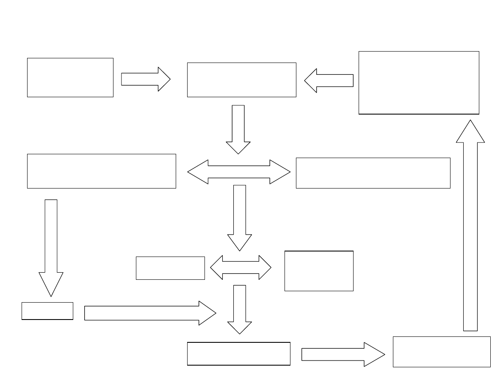

Summary of Natural Resources/Shoreline Adaptation Strategy Recommendations of
the Virginia Commission on Climate Change
Overview
We are still at the early stages of understanding the impacts of climate change on
Virginia. The Virginia Climate Change Commission was tasked with advancing our
understanding of those impacts, suggesting measures to reduce greenhouse gas emissions
thus avoiding making things worse, and developing a strategy for adapting to those
impacts we cannot avoid.
Carbon dioxide, one of the most prevalent green house gases (GHG), remains in the
atmosphere for up to 100 years. This means that even if we are successful in reducing
green house gas emissions, we still are faced with serious climate change impacts well
into the future.
The rate of relative sea level rise in the mid-Atlantic is accelerating and is projected to
range between 2.3 and 5.2 feet higher in 100 years. Water temperatures will continue to
increase, causing many changes – loss of submerged aquatic vegetation, advance of
spring spawning earlier in the year, heat stress on critical aquatic species, and other
impacts. Increased rain and storm variability will upset wetland hydrology, stream and
river flows, sediment control, and salinity regimes All of this will continue to stress
critical fish and shellfish species as the coastal environment – wetlands, mudflats,
beaches – is changed.
In 2007, Wetlands Watch warned that accelerating sea level rise could wipe out 50-80%
of our tidal wetlands over the next 100 years. Additional analysis has verified the range
of those impacts.
Wetlands losses on this scale will cause major environmental disruptions. Deeper water
and more turbid water also threaten to cause losses of up to 40% of our underwater
grasses. Wetlands and adjacent underwater grass beds are critical habitats for up to 80%
of Virginia’s economically important fish and shellfish species.
These projected changes make it more important that ever that we preserve our wetlands
and shoreline environments, avoid excessive shoreline hardening and development, and
allow our shorelines to adapt to sea level rise. Many refer to this as building “resilience”
into our coastlines, effectively buying insurance against future impacts, even if we cannot
anticipate them today.
Adapting to the projected impacts of climate change by creating polices to encourage
open and resilient shorelines will require focused programs and policies at the state,
regional, and local level.
Creating those policies was the goal of the adaptation provisions of the Commission on
Climate Change.

Summary
The Commission recommendations envision a science-based process that determines best
estimates of end points (at least 3.1
o
C temperature increase, sea level rise of at least 2.3
feet, increased intensity of storms and rain events over the next century), evaluates
impacts to natural systems, infrastructure, and the economy as a result of those
anticipated end point changes, looks at needed changes to government programs and
regulations to adapt to those end point changes, and then develops appropriate responses
within state and local governments.
The Commission called for the development of a state strategy for climate change
adaptation, led by a sub cabinet of Climate Change Response, with details fleshed out by
relevant secretariats and agencies within state government.
The process envisioned by the adaptation work group of the Commission is that state
agencies would review programs and regulations under their authority and judge the
impacts of projected climate change end points on those operations. The agencies would
then recommend adjustments to those programs and regulations to adapt to the projected
end points. Those program adjustments and end points would be reviewed periodically.
The Commission envisioned inclusion of climate change impacts into numerous long
range planning processes – for transportation and infrastructure at the state level and in
land use decisions at the local level.
Virginia is one of only a handful of states that have put forth adaptation plans as part of
their climate commission reports. It is farther ahead than most states in this regard, but
remains a lagging state in actually taking action on these recommendations, with none
having been introduced in the 2009 session of the General Assembly.
General Provisions of the Report
[What follows are specific recommendations taken from the Virginia Commission on
Climate Change that outline those adaptation provisions. References to the Commission
Document are in parentheses at the end of each paragraph. References are provided to
the responsible state department/agency, when not mentioned in the Commission text –
but such recommendations are neither official nor complete.]
The report used the United Nation’s International Panel on Climate Change (IPCC)
Fourth Assessment Report as a reference. Scientists from George Mason University and
Center for Ocean-Land-Atmosphere Studies in Maryland have examined the original
IPCC data for the moderate (A1B) scenario for 15 global models and calculated the 21
st
century warming for Virginia and the adjoining areas (36.5°N-42°N; 73°W-84°W). They
found that the average warming for Virginia and the adjoining areas would be 3.1°C
(5.6°F) and that precipitation would increase by 11%. The warming would be higher for
high emission scenarios. The IPCC projects that, to avoid catastrophic changes to the
world’s climate, greenhouse gas (GHG) emissions will need to be reduced by 25% below
the 1990 level by 2020, and 80% below the 1990 level by 2050. [Findings]
Sea level rise is a major concern for coastal Virginia, particularly the highly populated
Hampton Roads region. The Chesapeake Bay Program’s Scientific and Technical
Advisory Committee projects that sea levels in the Chesapeake Bay region will be
0.7-1.6 meters (2.3-5.2 feet) higher by 2100. Specific impacts will vary by location,
depending on changes in land elevation. [Findings]
Climate change will have a significant impact on Virginia’s ecosystems. At varying rates,
vegetation ranges are moving from current locations to higher altitudes and latitudes. The
effect of this will be that suitable habitat for some species will decline, other species will
become extirpated, and others species will become extinct. Climate change also will
exacerbate threats already faced by Virginia ecosystems, such as invasive species,
pathogens, and pollution. [Findings]
Coastal wetlands, a critical habitat for many of the Chesapeake Bay’s plants and animals,
are being lost as sea levels rise, and freshwater coastal wetlands are similarly threatened
by saltwater intrusion. [Findings]
Virginia should establish a “no net loss” policy for natural sequestration areas in the state
– including wetlands. [8C]
Climate changes such as sea level rise pose serious and growing threats to Virginia’s
roads, railways, ports, utility systems, and other critical infrastructure. [Findings]
The General Assembly should provide funding to a network of scientific and
technological institutions to regularly produce Virginia-specific predictions of climate
change and to monitor and evaluate the impact of climate change on Virginia’s
agriculture, energy use, economy, health and ecosystems; and to suggest optimal
adaptation and mitigation strategies to the policy-makers. [13A]
Virginia should establish a program to closely monitor and assess trends in these climate
change effects, adjust projections based on additional data and new scientific findings on
climate change, and revise state adaptation policies accordingly. [Adaptation work group
report]
State Level actions – programmatic
Planning
In order to coordinate Virginia’s response to climate change, the governor should
establish a sub cabinet on Climate Change Response, including the Secretaries of
Agriculture and Forestry, Commerce and Trade, Finance, Health and Human Resources,
Natural Resources, and Public Safety and Transportation. One key function of this sub
cabinet group would be to provide an annual assessment on progress toward
implementing the Climate Action Plan. [11A]
The Secretary of Natural Resources should lead an inter-agency and intergovernmental
effort to develop a Sea Level Rise Adaptation Strategy by January 1, 2011. The Sea
Level Rise Adaptation Strategy should encompass the full range of policies, programs,

and initiatives that will be required to adapt in the areas of natural resources, economy,
and infrastructure and any other area impacted by sea level rise. [14K]
The Assistant to the Governor for Commonwealth Preparedness should leave a statewide
assessment of the impact of climate change on emergency preparedness, response, and
preparedness plans and capacity. S/he should also coordinate with Department of
Defense installations in Virginia. [14M]
The Secretary of Commerce and Trade will identify adaptation plans to minimize impact
of climate change on Virginia’s economy. [14B]
The Secretary of Transportation should insure that climate change impacts, particularly
sea level rise and storm surge vulnerability in coastal areas of Virginia, are taken into
account in all transportation planning, project design, and prioritization of projects for
funding, and maintenance. Where existing transportation infrastructure is already
vulnerable, state and local transportation agencies should develop plans to minimize risks
and reduce vulnerabilities, including moving infrastructure from vulnerable areas, when
necessary and feasible. [14E]
State agencies and local governments should develop climate change adaptation plans for
critical infrastructures for which they are responsible. Climate change impacts,
particularly sea level rise and storm surge vulnerability in coastal areas of Virginia,
should be taken into account in all critical infrastructure planning, project design, and
prioritization of projects for funding, as well as infrastructure management, operations,
and maintenance. VTRANS 2035, the Commonwealth’s statewide long-range
multimodal transportation plan, should include a complete reevaluation of the state’s
transportation plans, capital investment programming, and projects in light of climate
change, higher energy prices, and changing demographics. Private sector owners of
infrastructure should be encouraged to conduct a climate change vulnerability assessment
and develop a climate change adaptation plan as a condition for approval of any required
permits. VTRANS 2035 should include a complete reevaluation of the state’s
transportation plans, capital investment, and project in light of climate change, higher
energy prices, and changing demographics. [14F] [All departments and agencies]
Virginia’s Department of Conservation and Recreation (DCR) and Department of Game
and Inland Fisheries (DGIF) have identified critical habitat planning documents and the
state should act on those documents to conserve critical conservation areas – 5% of those
currently unprotected by 2015 and 25% by 2025. These agencies should also develop a
process for preserving native Virginia species, and prevent the spread of invasive species,
under anticipated conditions of climate change. [14D]
The Department of Historic Resources should prepare for protection of critical historic
resources that might be threatened by climate change conditions and ensure that a
historical record is preserved of those resources that cannot be protected. [14BB]
The State Corporation Commission should work with insurance industry to develop an
analysis of the areas most vulnerable to insurance losses due to increased storm activities
and inundation from climate change impacts. [14I]
Policy
Virginia should establish a no net loss goal for natural carbon sequestration areas based
on the 2010 baseline. In order to achieve progress on a goal of no net loss of natural
carbon sinks, the Commonwealth should set ambitious goals to protect, in separate
categories, forests, wetlands, and farmland to maximize protection of natural carbon
sinks. Particular focus should be given to large blocks of functional forest, wetlands, and
farmland that not only sequester carbon but also demonstrate multiple economic and
ecologic benefits. [8C]
All state discretionary funding programs should require that infrastructure projects
receiving state funding are designed to be resistant to climate change impacts over the
projected life of the project. Additionally, the Commonwealth should establish policies
that discourage expenditure of public funds on development of public infrastructure in
areas highly vulnerable to climate change effects, especially sea level rise and increased
risk of flooding from intense precipitation events. [14G]
Adaptation policies and programs for the built environment should take into
consideration impacts on natural systems, particularly in coastal areas, and minimize
negative impact on natural areas that are important for mitigating the impact of climate
change. [14J]
Research and Monitoring
The General Assembly should provide funding for the Virginia Geographic Information
Network to acquire LiDAR (Light Detection and Ranging) data for the coastal zone
(estimated cost $6 million). [14N]
The General Assembly should provide funding for high-resolution data on ground cover
to begin identifying and monitoring large natural sequestration areas in Virginia.
Collection and compilation of this statewide land cover data should be completed by
January 13, 2010, and a comprehensive survey should be conducted every four years to
validate the accuracy of the inventory. In particular, wetlands inventory data for Virginia
is outdated and needs to be updated. [11D]
Virginia, like all states, is struggling with estimates of natural carbon sequestration rates
and sources, and, as a result, the current Green House Gas (GHG) emissions inventory
does not account for the carbon currently sequestered in Virginia’s forests, farmland,
wetlands, or long-lived farm and forest products. Virginia’s universities should supply
the research that is necessary to incorporate this information into the next iteration of the
GHG emissions inventory. This research will provide a quantitative basis to recognize
emission reduction benefits associated with land conservation and management policies
and to further the development of best practices. [8E]
The Virginia Department of Health should modify surveillance systems to include
impacts of climate change on human health - disease, heat impacts on health, differential
impacts on low-income populations. [14V – 14AA]

State level actions – regulatory
The General Assembly should amend the State Water Control Law to include as a policy
of the Commonwealth consideration of changing climatic conditions in the protection and
restoration of state waters and living resources. [15A] [Department of Environmental
Quality – DEQ]
The General Assembly and Governor should
direct a comprehensive review of other state
agency and board policies, regulations, and enabling authorities to determine the
amendments that are needed to account for the impacts of changing climate conditions on
state waters and living resources. Such a review should include, but not be limited to,
collaboration among Virginia Marine Resources Commission (VMRC) (§28.2 et seq.),
the Virginia Soil and Water Conservation Board (§10.1-603.2:1 et seq.), the State Water
Control Board (including water supply planning requirements in §62.1-44.38:1), and the
Chesapeake Bay Local Assistance Board (§ 10.1-2100 et seq.). [15B] [DEQ, DCR,
VMRC]
To increase shoreline resiliency and allow potential migration of wetlands inland, the
Virginia Marine Resources Commission should adopt shoreline policies to emphasize the
use of living shorelines. [14A]
Department of Conservation and Recreation should assess the need to expand the
Chesapeake Bay Preservation Act buffers beyond the 100-foot requirements to
accommodate sea level rise. [14L]
Department of Conservation and Recreation should revise the Virginia Floodplain
Management Plan and update model floodplain management ordinances to address more
specifically sea-level rise and increasing storm surge impacts due to climate change.
[14H]
Department of Environmental Quality should incorporate assessment of the current and
potential impact of climate change on instream flow into the state water resources plan (§
62.1-44.38:1) and evaluate the impact of climate change induced alterations in stream
flow on in-stream beneficial uses when assessing a Virginia Water Protection Permit (§
62.1-44.15:20) application for water withdrawals.[15D]
Department of Conservation and Recreation should monitor available forecasting tools
and amend its stormwater regulation as needed to ensure the implementation of
stormwater management measures that will continue to function effectively in an altered
precipitation regime. [14Q]
Local Governments/ Regional Planning
Local governments in the coastal area of Virginia should include projected climate
change impacts, especially sea level rise and storm surge, in all planning efforts,
including local government comprehensive plans and land use plans. Local governments
should revise zoning and permitting ordinances to require projected climate change

impacts be addressed in order to minimize threats to life, property, and public
infrastructure and to ensure consistency with state and local climate change adaptation
plans. [14C]
The General Assembly should require local governments whose jurisdictions encompass
Virginia’s shoreline to develop integrated shoreline management plans in coordination
with VMRC. Such planning efforts would integrate adaptation and response strategies
for coastal erosion, sea level rise adaptation, and coastal storm surge into existing state
and local policies. [14U]
State agencies and local governments should develop climate change adaptation plans for
critical infrastructures for which they are responsible. [14F]
Local governments should then be directed to update floodplain ordinances and maps to
incorporate sea-level rise and increasing storm surge impacts where applicable. [14H]
The General Assembly should, with the Virginia Municipal League and the Virginia
Association of Counties, undertake a review of authorities of local governments in
dealing with climate change. [15C]
The State Water Control Board should amend the comprehensive water supply planning
regulation (9 VAC 25-780) to require that localities or regional planning units assess the
potential impacts of climate change on existing or proposed water supplies. [15E]
The General Assembly should formalize the use of Planning District Commissions
(PDCs) as a bridge between the state and local governments and encourage the PDCs to
include climate change in their regional strategic plans. [11E]
It also is important to make sure that federal flood insurance programs discourage
development in sensitive coastal areas. [Finding]
Private Sector
Private sector owners of infrastructure should be encouraged to conduct a climate change
vulnerability assessment and develop a climate change adaptation plan as a condition for
approval of any required permits. [14F]
-=-=-=-=-=-=
Summarized by Skip Stiles, Member, Virginia Commission on Climate Change
Executive Director
Wetlands Watch
757-623-4835
skip.stiles@wetlandswatch.org

VIRGINIA CLIMATE CHANGE ADAPTATION STRATEGY FLOW CHART
Climate Change
Commission
Recommendations -
December 2008
Estimate of Climate Change
End Points –
Temp ~ +3
o
C
SLR ~ +2.3 ft.
Storm Rainfall Intensity ++?
Etc.
Formation of Sub-Cabinet
on Climate Change
Response
Secretariat/Department/Agency Review
of Existing Programs and Impacts of
Climate Change End Points Upon them
General Assembly Review of
Authorities and Need for Changes in
Light of Climate Change End Points
Modified State
Programs
Modified
Local /Regional
Government
Programs
Review of New Climate
Change Data ~ 5 years
Adaptation Strategy
Implementation
Prepared by Skip Stiles
Wetlands Watch
www.wetlandswatch.org
Funding